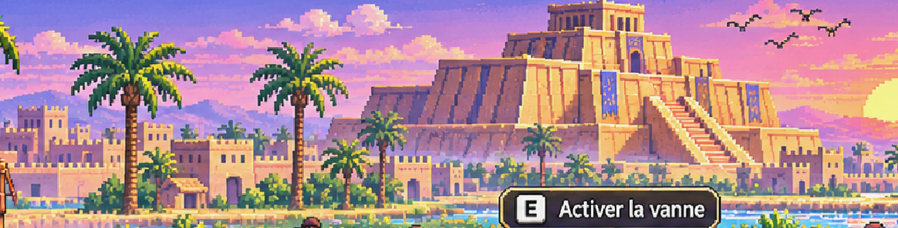

UN JEU D’ACTION-AVENTURE HISTORIQUE • PREMIÈRES CIVILISATIONS
Les Gardiens du Temps
La cité des souvenirs effacés — cinq niveaux d’aventure et d’histoire. Incarne Kaël, rétablis les savoirs de la Mésopotamie et affronte l’Oubli. Les niveaux sont accessibles séparément pour faciliter la révision en classe.

Choisis ton niveau
01
Les eaux des deux fleuvesL’eau, l’agriculture et les canauxÀ découvrir
▶02Le marché des mille échangesSurplus, métiers et réseaux commerciauxÀ découvrir
▶03Les archives perduesTablettes, comptabilité et traces écritesÀ découvrir
▶04Le pouvoir de la citéOrganisation sociale, règles et religionÀ découvrir
▶05Le cœur de l’OubliSynthèse : liens entre les caractéristiques des civilisationsÀ découvrir
▶Flèches / A-D : avancer • Espace : sauter • J : attaquer • E : interagir • 1–4 : répondre • P : pause. Sauvegarde locale dans le navigateur utilisé.